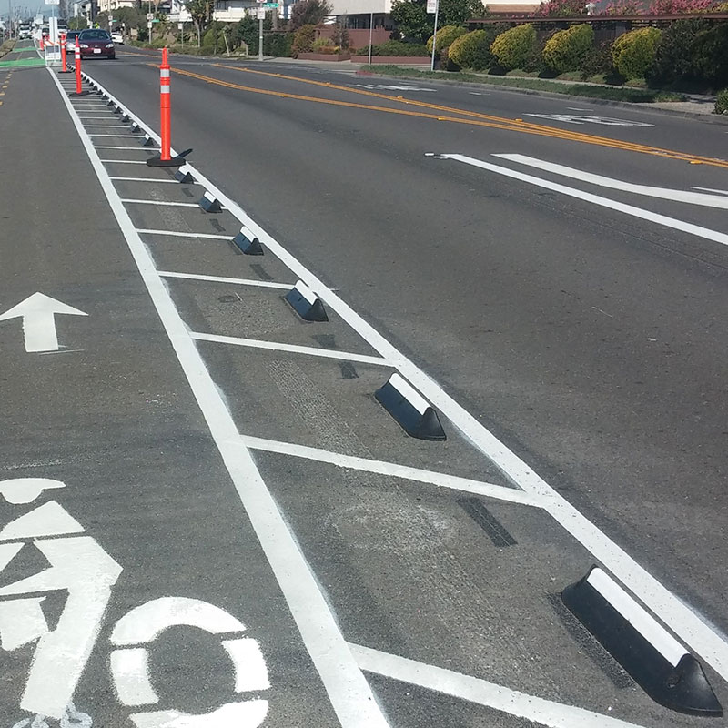

CycleLane is a smart, safe solution that provides a visual separation between
vehicle and bicycle lanes. Constructed of recycled rubber, CycleLane curbing
is designed to define traffic spaces while protecting the safety of bicyclists.
Ideal for use anywhere with bike traffic, the lane delineators separate vehicle
and bike traffic, with a unique two sided design.